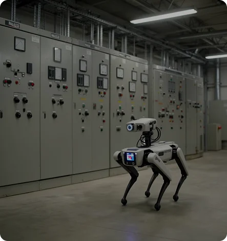

Join facility executives receiving weekly AI operational playbooks and get instant access to our complete CRSC scoring templates, cost per square foot baselines, and audit checklists.
Every critical facility and data center leader is fighting the same two bottlenecks right now: senior L3 engineers losing hours to manual thermal and visual floor walks, and new technicians requiring weeks of hands on shadowing before they can safely touch a rack or panel.
Senior engineers walk aisles with handheld flashlights and clipboards, logging sporadic readings that miss gradual thermal drift between shifts.
Continuous multi-sensor sweeps across active white space and critical power halls isolate thermal drift before alarms trigger.
During our field validated pilot at the CRSC Data Center in Houston, TX, our autonomous multi sensor robot completed 19 autonomous runs across active white space and critical power halls. It captured 1,600+ thermal and visual observations without manual intervention and isolated a failing condenser running 7.2°F warmer than its counterpart unit (independently verified within 1.1°F by handheld thermography).
We packaged the exact telemetry baselines, inspection standards, and technician grading rubrics from those live runs into a single, ready to use 2026 CRSC Benchmark Kit.
Four field tested operational templates and rubrics built directly from our Houston CRSC deployment.
Compare your current round times, drift telemetry, and Mean Time to Detect (MTTD) against real data from 1,600+ categorized CRSC observations.

Field tested scoring templates for electrical wear, phase disconnections, and low to medium voltage switchgear, structured to help your team standardize supplemental training records under the mandatory NFPA 70B standard.
Localized asymmetric hotspot (+7.2°F delta vs adjacent phase). Verified within ±1.1°F by handheld thermography.
Practical benchmarks from our 12 scenario simulator showing technicians how to separate real overheating defects (like loose breaker lugs) from harmless thermal scale artifacts.
The exact punch list criteria our autonomous "Robot Coach" uses to verify LC connectors, polarity, bend radius, dust caps, and labeling, saving senior leads 45+ minutes of manual verification per practice panel.